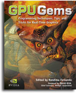
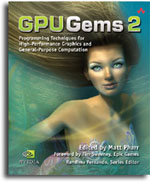

GPU Gems:
GPU Gems is hard bound, 816 pages, and in full color throughout, with over 300 diagrams and screenshots. We invite you to take a look around the site to learn more about the book. GPU Gems won the Game Developer Frontline Award in 2004. Get more information, including table of content and sample chapters at the GPU Gems home page.
GPU Gems 2:
GPU Gems 2 is hard bound, approximately 880 pages, and in full color throughout, with over 300 diagrams and screenshots. It was released at the 2005 Game Developers Conference (March 7 - 11, 2005) and was the best-selling book at the show. Get more information, including table of content and sample chapters at the GPU Gems 2 home page.
Other Useful Resources
NVIDIA empowers developers using the latest GPU technology by providing a suite of award-winning tools for content creation, performance analysis, and general software development. In the list below you will find outstanding tools, plug-ins, utilities, and libraries that help solve the challenges of creating world-class content and developing cutting edge applications.
| Software Resources | Performance Improvement | Content Creation |
|---|---|---|
Misc |
Tools PerfKit 5 PerfHUD 5 PerfSDK ShaderPerf 2 gDEBugger Documentation Practical Perf. Analysis |
Baking Textures with Gelato |
Visit our developer website to find more development-related material: developer.nvidia.com.
System Requirements
The system requirements for each chapter's sample vary widely, but for optimal performance, we recommend that you use a Shader Model 4.0-class GPU such as an NVIDIA GeForce 8 Series, G8X-based NVIDIA Quadro FX, or newer graphics processor. In addition, you may need to upgrade your graphics driver. You will need Microsoft Visual Studio to open up some of the provided projects. OpenGL, GLUT, and DirectX are also required to view all the examples. Many of the executable demos will run only on PCs running Microsoft Windows.
Legal Terms of Use
No Warranty. THE SOFTWARE AND ANY OTHER MATERIALS PROVIDED BY NVIDIA TO DEVELOPER HEREUNDER ARE PROVIDED “AS IS.” NVIDIA DISCLAIMS ALL WARRANTIES, EXPRESS, IMPLIED OR STATUTORY, INCLUDING, WITHOUT LIMITATION, THE IMPLIED WARRANTIES OF TITLE, MERCHANTABILITY, FITNESS FOR A PARTICULAR PURPOSE AND NONINFRINGEMENT.
Limitation of Liability. NVIDIA SHALL NOT BE LIABLE TO DEVELOPER, DEVELOPER’S CUSTOMERS, OR ANY OTHER PERSON OR ENTITY CLAIMING THROUGH OR UNDER DEVELOPER FOR ANY LOSS OF PROFITS, INCOME, SAVINGS, OR ANY OTHER CONSEQUENTIAL, INCIDENTAL, SPECIAL, PUNITIVE, DIRECT OR INDIRECT DAMAGES (WHETHER IN AN ACTION IN CONTRACT, TORT OR BASED ON A WARRANTY), EVEN IF NVIDIA HAS BEEN ADVISED OF THE POSSIBILITY OF SUCH DAMAGES. THESE LIMITATIONS SHALL APPLY NOTWITHSTANDING ANY FAILURE OF THE ESSENTIAL PURPOSE OF ANY LIMITED REMEDY. IN NO EVENT SHALL NVIDIA'S AGGREGATE LIABILITY TO DEVELOPER OR ANY OTHER PERSON OR ENTITY CLAIMING THROUGH OR UNDER DEVELOPER EXCEED THE AMOUNT OF MONEY ACTUALLY PAID BY THE DEVELOPER TO NVIDIA FOR THE SOFTWARE OR ANY OTHER MATERIALS.
Copyright © 2007 NVIDIA® Corporation. All rights reserved. All company and/or product names may be trademarks and/or registered trademarks of the respective owners with which they are associated.
NVIDIA
Corporation |
2701 San Tomas Expressway
| Santa
Clara, CA 95050
|
(408) 486-2000